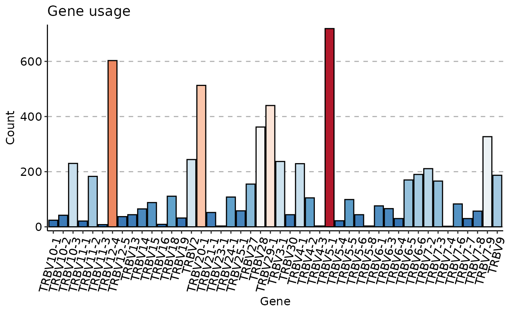
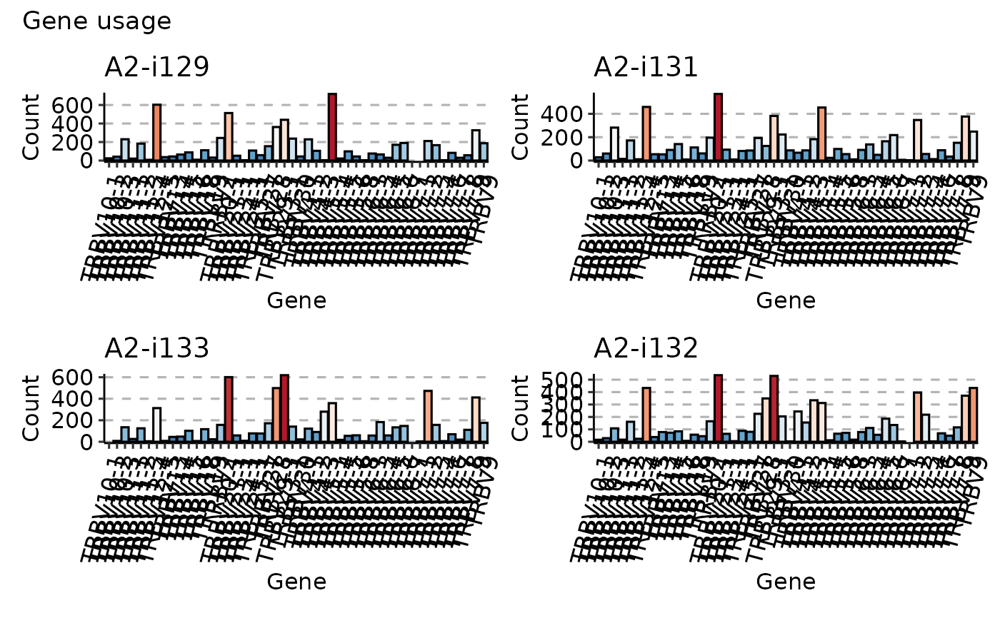

![[Deprecated]](figures/lifecycle-deprecated.svg)
Visualisation of distributions using ggplot2-based histograms.
Usage
vis_hist(
.data,
.by = NA,
.meta = NA,
.title = "Gene usage",
.ncol = NA,
.points = TRUE,
.test = TRUE,
.coord.flip = FALSE,
.grid = FALSE,
.labs = c("Gene", NA),
.melt = TRUE,
.legend = NA,
.add.layer = NULL,
...
)Arguments
- .data
Input matrix or data frame.
- .by
Pass NA if you want to plot samples without grouping.
You can pass a character vector with one or several column names from ".meta" to group your data before plotting. In this case you should provide ".meta".
You can pass a character vector that exactly matches the number of samples in your data, each value should correspond to a sample's property. It will be used to group data based on the values provided. Note that in this case you should pass NA to ".meta".
- .meta
A metadata object. An R dataframe with sample names and their properties, such as age, serostatus or hla.
- .title
The text for the title of the plot.
- .ncol
A number of columns to display. Provide NA (by default) if you want the function to automatically detect the optimal number of columns.
- .points
A logical value defining whether points will be visualised or not.
- .test
A logical vector whether statistical tests should be applied. See "Details" for more information.
- .coord.flip
If TRUE then swap x- and y-axes.
- .grid
If TRUE then plot separate visualisations for each sample.
- .labs
A character vector of length two with names for x-axis and y-axis, respectively.
- .melt
If TRUE then apply reshape2::melt to the ".data" before plotting. In this case ".data" is supposed to be a data frame with the first character column reserved for names of genes and other numeric columns reserved to counts or frequencies of genes. Each numeric column should be associated with a specific repertoire sample.
- .legend
If TRUE then plots the legend. If FALSE removes the legend from the plot. If NA automatically detects the best way to display legend.
- .add.layer
Addditional ggplot2 layers, that added to each plot in the output plot or grid of plots.
- ...
Is not used here.
Details
If data is grouped, then statistical tests for comparing means of groups will be performed, unless .test = FALSE is supplied.
In case there are only two groups, the Wilcoxon rank sum test (https://en.wikipedia.org/wiki/Wilcoxon_signed-rank_test) is performed
(R function wilcox.test() with an argument exact = FALSE) for testing if there is a difference in mean rank values between two groups.
In case there more than two groups, the Kruskal-Wallis test (https://en.wikipedia.org/wiki/Kruskal%E2%80%93Wallis_one-way_analysis_of_variance) is performed (R function kruskal.test()), that is equivalent to ANOVA for ranks and it tests whether samples from different groups originated from the same distribution.
A significant Kruskal-Wallis test indicates that at least one sample stochastically dominates one other sample.
Adjusted for multiple comparisons P-values are plotted on the top of groups.
P-value adjusting is done using the Holm method (https://en.wikipedia.org/wiki/Holm%E2%80%93Bonferroni_method) (also known as Holm-Bonferroni correction).
You can execute the command ?p.adjust in the R console to see more.
Examples
# \dontrun{
data(immdata)
imm_gu <- geneUsage(immdata$data[[1]])
vis(imm_gu,
.plot = "hist", .add.layer =
theme(axis.text.x = element_text(angle = 75, vjust = 1))
)
#> Using Names as id variables

imm_gu <- geneUsage(immdata$data[1:4])
vis(imm_gu,
.plot = "hist", .grid = TRUE, .add.layer =
theme(axis.text.x = element_text(angle = 75, vjust = 1))
)
#> Using Names as id variables
#> Warning: Removed 2 rows containing missing values or values outside the scale range
#> (`geom_bar()`).
#> Warning: Removed 2 rows containing missing values or values outside the scale range
#> (`geom_bar()`).
#> Warning: Removed 1 row containing missing values or values outside the scale range
#> (`geom_bar()`).

# }